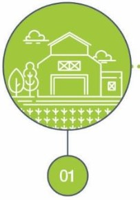
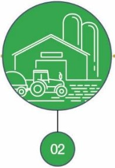
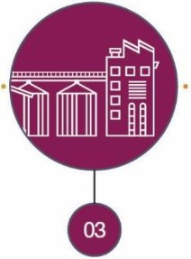
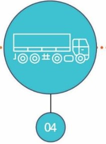
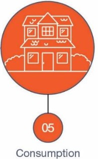

No Other Animal Does This
63% of the food Canadians throw away could have been EATEN
Almost 2.2 million tonnes of edible food wasted each year
Food waste costs Canadians $17 BILLION!
Wasting food means wasting resources used to grow, produce and distribute
Canada leading in food wastage, food wasted yearly:
470,000 heads of lettuce
1,200,000 tomatoes
2,400,000 potatoes
750,000 loaves of bread
1,225,000 apples
555,000 bananas
1,000,000 cups of milk
450,000 eggs
An Avoidable Food Crisis

Production

Post Harvest Handling &
Storage

Processing & Manufacturing

Wastage Starts
Distribution/Retail/HRI

Maximum Wastage
Consumption
What WE can do?
- Citizens
- Plan out meals - make a detailed shopping list with the ingredients - stick to that list
- Shop smart and realistically
- When cooking, dont over-serve food
- Store food in the right places
- Treat expiration and sell-by dates as guidelines
- Governments
- Create a standardized framework for estimating, benchmarking and monitoring FLW at the business sector
- Estimate unavoidable (planned) and avoidable (unplanned / post processing) FLW occurring along the food value chain
- From the primary production or capture of terrestrial and marine commodities through to consumer foods and beverages
- Identify the root causes of Canadian FLW occurring in different foods and at explicit points along the value chain